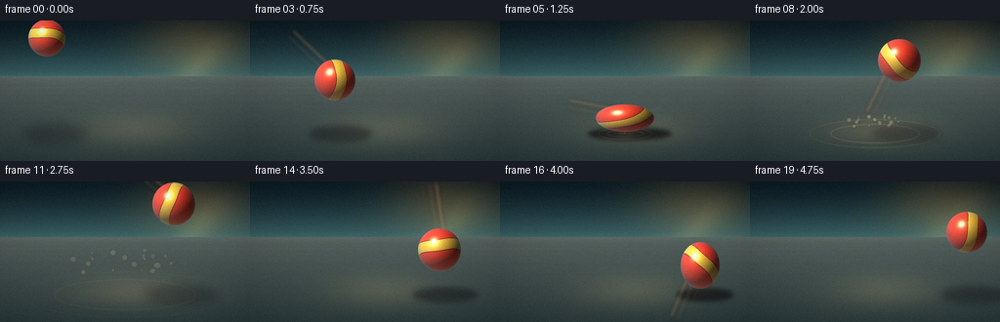
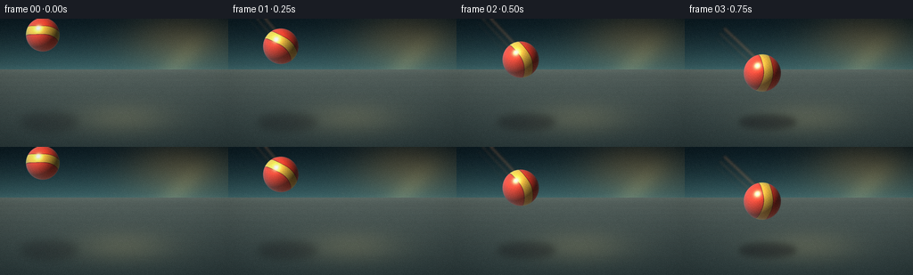
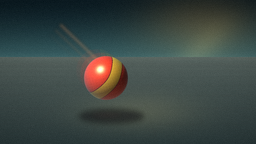
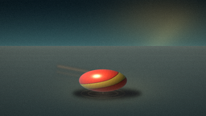
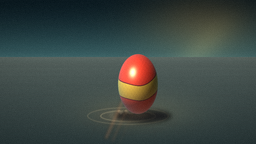

CODING AGENTS AS PIXEL WORLD MODELS
traex/DeepSeek-V4.1-Flash · phygen_026
点击播放 · 原生 RGB 像素
逐轮保存的候选
回放视频、检查图与代码变化。
每份候选均可单独播放。实际图片检查记录在下方工具轨迹中。
候选 01播放与检查图
点击播放 · 原生 RGB 像素


展开代码变化
--- 上一保存版本
+++ 本次保存版本
@@ -0,0 +1,344 @@
+from pathlib import Path
+import math
+
+import numpy as np
+from PIL import Image, ImageDraw, ImageFilter
+
+import artifact_io
+
+
+WIDTH = 256
+HEIGHT = 144
+FRAMES = 20
+FPS = 4.0
+SS = 4 # Supersampling factor for clean, anti-aliased edges.
+W = WIDTH * SS
+H = HEIGHT * SS
+HORIZON = 57.0
+GROUND = 114.0
+CASE_DIR = Path(__file__).resolve().parent
+
+
+def smoothstep(edge0, edge1, x):
+ t = np.clip((x - edge0) / (edge1 - edge0), 0.0, 1.0)
+ return t * t * (3.0 - 2.0 * t)
+
+
+def make_background():
+ """A cool, softly lit studio with a receding concrete floor."""
+ yy, xx = np.mgrid[0:H, 0:W].astype(np.float32)
+ xn = xx / (W - 1)
+ yn = yy / (H - 1)
+
+ top = np.array([12, 28, 35], dtype=np.float32)
+ low = np.array([59, 99, 103], dtype=np.float32)
+ sky_t = np.clip(yy / (HORIZON * SS), 0.0, 1.0) ** 1.45
+ image = top[None, None, :] * (1.0 - sky_t[..., None]) + low[None, None, :] * sky_t[..., None]
+
+ # Warm window light rakes across the back wall from the upper right.
+ glow = np.exp(-(((xn - 0.79) / 0.34) ** 2 + ((yn - 0.18) / 0.33) ** 2) * 2.1)
+ image += glow[..., None] * np.array([48, 28, 7], dtype=np.float32)
+ beam = np.exp(-((xn + 0.42 * yn - 0.93) / 0.075) ** 2) * smoothstep(0.0, 0.38, yn)
+ image += beam[..., None] * np.array([24, 18, 7], dtype=np.float32)
+
+ # Floor: cool graphite concrete with a warm pool of bounced sunlight.
+ floor_mask = yy >= HORIZON * SS
+ floor_t = np.clip((yy / SS - HORIZON) / (HEIGHT - HORIZON), 0.0, 1.0)
+ floor_near = np.array([43, 58, 59], dtype=np.float32)
+ floor_far = np.array([92, 104, 99], dtype=np.float32)
+ floor = floor_far[None, None, :] * (1.0 - floor_t[..., None] ** 0.7) + floor_near[None, None, :] * floor_t[..., None] ** 0.7
+ floor_pool = np.exp(-(((xn - 0.54) / 0.36) ** 2 + ((yn - 0.78) / 0.21) ** 2) * 2.6)
+ floor += floor_pool[..., None] * np.array([28, 22, 11], dtype=np.float32)
+ image = np.where(floor_mask[..., None], floor, image)
+
+ base = Image.fromarray(np.clip(image, 0, 255).astype(np.uint8))
+
+ # Perspective seams in the floor.
+ grid = Image.new("RGBA", (W, H), (0, 0, 0, 0))
+ draw = ImageDraw.Draw(grid)
+ vp = (128.0 * SS, 51.0 * SS)
+ for xb in (-80, 10, 88, 158, 226, 294, 362):
+ xb *= SS
+ draw.line((vp[0], vp[1], xb, H), fill=(186, 205, 195, 30), width=max(1, SS // 2))
+ for y in (62, 66, 71, 77, 85, 95, 108, 124, 144):
+ yh = y * SS
+ draw.line((0, yh, W, yh), fill=(198, 214, 204, 27), width=max(1, SS // 2))
+ grid = grid.filter(ImageFilter.GaussianBlur(0.75 * SS))
+ base = Image.alpha_composite(base.convert("RGBA"), grid).convert("RGB")
+
+ # Atmospheric haze at the wall/floor junction.
+ haze = Image.new("RGBA", (W, H), (0, 0, 0, 0))
+ hd = ImageDraw.Draw(haze)
+ hd.rectangle((0, (HORIZON - 3) * SS, W, (HORIZON + 5) * SS), fill=(157, 187, 181, 20))
+ haze = haze.filter(ImageFilter.GaussianBlur(4.0 * SS))
+ base = Image.alpha_composite(base.convert("RGBA"), haze).convert("RGB")
+ return base
+
+
+def ball_patch(cx, cy, rx, ry, roll, opacity=1.0, brightness=1.0):
+ """Shade a glossy, seam-striped rubber ellipsoid into a transparent patch."""
+ cxh, cyh = cx * SS, cy * SS
+ rxh, ryh = rx * SS, ry * SS
+ margin = 4 * SS
+ left = int(math.floor(cxh - rxh - margin))
+ top = int(math.floor(cyh - ryh - margin))
+ right = int(math.ceil(cxh + rxh + margin))
+ bottom = int(math.ceil(cyh + ryh + margin))
+
+ # Keep sampling inside the image; the ball is intentionally cropped at the top
+ # in the opening and apex frames.
+ left_c, top_c = max(0, left), max(0, top)
+ right_c, bottom_c = min(W, right), min(H, bottom)
+ if right_c <= left_c or bottom_c <= top_c:
+ return None, (left_c, top_c)
+
+ yy, xx = np.mgrid[top_c:bottom_c, left_c:right_c].astype(np.float32)
+ x = (xx + 0.5 - cxh) / rxh
+ y = (yy + 0.5 - cyh) / ryh
+ r2 = x * x + y * y
+ inside = r2 <= 1.0
+ z = np.sqrt(np.clip(1.0 - r2, 0.0, 1.0))
+
+ # A rotating two-tone rubber surface. The band curves over the sphere.
+ ca, sa = math.cos(roll), math.sin(roll)
+ qx = ca * x + sa * y
+ qy = -sa * x + ca * y
+ band_coord = 0.78 * qy + 0.23 * z + 0.05 * np.sin(3.0 * qx + 0.8 * roll)
+ band = np.abs(band_coord) < 0.205
+ seam = (np.abs(np.abs(band_coord) - 0.205) < 0.025) & ~band
+
+ coral = np.array([1.00, 0.195, 0.095], dtype=np.float32)
+ golden = np.array([1.00, 0.735, 0.175], dtype=np.float32)
+ base = np.where(band[..., None], golden, coral)
+ base = np.where(seam[..., None], np.array([0.48, 0.105, 0.075], dtype=np.float32), base)
+
+ # Subtle molded-rubber speckle, aligned with the rotating surface.
+ speckle = (
+ np.sin(37.0 * qx + 2.3 * roll) * np.sin(33.0 * qy - 1.7 * roll)
+ + 0.45 * np.sin(71.0 * (qx + qy))
+ )
+ base *= (1.0 + 0.025 * speckle)[..., None]
+
+ normal = np.stack((x, y, z), axis=-1)
+ normal /= np.maximum(np.linalg.norm(normal, axis=-1, keepdims=True), 1e-5)
+ light = np.array([-0.46, -0.69, 0.56], dtype=np.float32)
+ light /= np.linalg.norm(light)
+ half = light + np.array([0.0, 0.0, 1.0], dtype=np.float32)
+ half /= np.linalg.norm(half)
+
+ ndl = np.clip(np.sum(normal * light, axis=-1), 0.0, 1.0)
+ diffuse = 0.24 + 0.92 * ndl
+ sky_fill = np.clip(0.5 - 0.5 * normal[..., 0], 0.0, 1.0)
+ fill = np.array([0.10, 0.18, 0.22], dtype=np.float32)[None, None, :] * sky_fill[..., None]
+ ndh = np.clip(np.sum(normal * half, axis=-1), 0.0, 1.0)
+ spec = (ndh ** 62)[..., None] * np.array([1.00, 0.93, 0.70], dtype=np.float32)
+ broad = (ndh ** 12)[..., None] * np.array([0.14, 0.11, 0.055], dtype=np.float32)
+ rim = ((1.0 - z) ** 2.3)[..., None] * np.array([0.06, 0.18, 0.21], dtype=np.float32)
+ floor_bounce = np.clip(normal[..., 1], 0.0, 1.0)[..., None] * np.array([0.16, 0.045, 0.010], dtype=np.float32)
+ occlusion = (0.72 + 0.28 * z)[..., None]
+
+ rgb = base * diffuse[..., None] * occlusion + fill + rim + spec + broad + floor_bounce
+ rgb *= brightness
+ rgb = np.clip(rgb, 0.0, 1.0)
+
+ edge = np.clip((1.0 - np.sqrt(np.clip(r2, 0.0, 1.0))) * min(rxh, ryh) * 0.75 + 0.45, 0.0, 1.0)
+ alpha = np.where(inside, edge * opacity, 0.0)
+ rgba = np.zeros((bottom_c - top_c, right_c - left_c, 4), dtype=np.uint8)
+ rgba[..., :3] = np.clip(rgb * 255.0 + 0.5, 0, 255).astype(np.uint8)
+ rgba[..., 3] = np.clip(alpha * 255.0 + 0.5, 0, 255).astype(np.uint8)
+ return Image.fromarray(rgba), (left_c, top_c)
+
+
+def composite_ball(base, params, opacity=1.0, brightness=1.0):
+ patch, pos = ball_patch(*params, opacity=opacity, brightness=brightness)
+ if patch is None:
+ return base
+ layer = Image.new("RGBA", (W, H), (0, 0, 0, 0))
+ layer.paste(patch, pos)
+ return Image.alpha_composite(base.convert("RGBA"), layer).convert("RGB")
+
+
+def draw_shadow(base, cx, cy, rx, ry):
+ bottom = cy + ry
+ height = max(0.0, GROUND - bottom)
+ spread = rx * (1.42 + 0.0035 * height)
+ shade_h = 6.0 + 0.045 * height
+ alpha = int(np.clip(205.0 / (1.0 + height / 29.0) + 18.0, 45, 210))
+ sx = cx + 5.0 + 0.035 * height
+ sy = GROUND + 2.2
+
+ layer = Image.new("RGBA", (W, H), (0, 0, 0, 0))
+ draw = ImageDraw.Draw(layer)
+ box = ((sx - spread) * SS, (sy - shade_h) * SS, (sx + spread) * SS, (sy + shade_h) * SS)
+ draw.ellipse(box, fill=(20, 20, 24, alpha))
+ if height < 6.0:
+ contact_w = rx * 0.86
+ cbox = ((cx - contact_w) * SS, (GROUND - 2.4) * SS, (cx + contact_w) * SS, (GROUND + 3.8) * SS)
+ draw.ellipse(cbox, fill=(15, 13, 14, 170))
+ layer = layer.filter(ImageFilter.GaussianBlur((2.2 + min(5.5, height * 0.035)) * SS))
+ return Image.alpha_composite(base.convert("RGBA"), layer).convert("RGB")
+
+
+def add_speed_trail(base, tx, ty, rx, ry, direction, strength):
+ if strength <= 0.02:
+ return base
+ overlay = Image.new("RGBA", (W, H), (0, 0, 0, 0))
+ draw = ImageDraw.Draw(overlay)
+ dx, dy = direction
+ length = (13.0 + 15.0 * strength) * SS
+ nx, ny = -dy, dx
+ for index in range(3):
+ off = (index - 1) * 1.8 * SS
+ p0 = ((tx + nx * off) * SS, (ty + ny * off) * SS)
+ p1 = ((tx - dx * length + nx * off) * SS, (ty - dy * length + ny * off) * SS)
+ width = int((4.0 - index * 0.9) * SS)
+ draw.line((p0, p1), fill=(255, 163, 108, int((20 + 17 * strength) * (3 - index))), width=max(1, width))
+ overlay = overlay.filter(ImageFilter.GaussianBlur(1.6 * SS))
+ return Image.alpha_composite(base.convert("RGBA"), overlay).convert("RGB")
+
+
+def add_impact_fx(base, frame_index):
+ age = frame_index - 5
+ if age < 0 or age > 7:
+ return base
+
+ layer = Image.new("RGBA", (W, H), (0, 0, 0, 0))
+ draw = ImageDraw.Draw(layer)
+ ix, iy = 128.0, GROUND + 2.0
+ fade = math.exp(-max(0, age) / 2.8)
+
+ # Warm bounce glow on the concrete.
+ glow = Image.new("RGBA", (W, H), (0, 0, 0, 0))
+ gd = ImageDraw.Draw(glow)
+ gr = (34 + age * 9.0)
+ gd.ellipse(((ix - gr) * SS, (iy - gr * 0.20) * SS, (ix + gr) * SS, (iy + gr * 0.20) * SS),
+ fill=(255, 126, 60, int(38 * fade)))
+ glow = glow.filter(ImageFilter.GaussianBlur(8.0 * SS))
+ layer = Image.alpha_composite(layer, glow)
+ draw = ImageDraw.Draw(layer)
+
+ # Expanding floor rings.
+ for k, mult in enumerate((1.0, 1.46)):
+ rr = (19.0 + age * 9.0) * mult
+ box = ((ix - rr) * SS, (iy - rr * 0.22) * SS, (ix + rr) * SS, (iy + rr * 0.22) * SS)
+ color = (255, 225, 170, int((92 - k * 27) * fade))
+ draw.ellipse(box, outline=color, width=max(SS, int((1.5 - 0.25 * k) * SS)))
+
+ # Contact flash.
+ if age <= 1:
+ flash = Image.new("RGBA", (W, H), (0, 0, 0, 0))
+ fd = ImageDraw.Draw(flash)
+ fr = 12.0 + age * 8.0
+ fd.ellipse(((ix - fr) * SS, (iy - fr * 0.42) * SS, (ix + fr) * SS, (iy + fr * 0.42) * SS),
+ fill=(255, 238, 190, 100 if age == 0 else 58))
+ flash = flash.filter(ImageFilter.GaussianBlur(3.2 * SS))
+ layer = Image.alpha_composite(layer, flash)
+
+ layer = layer.filter(ImageFilter.GaussianBlur(0.35 * SS))
+ return Image.alpha_composite(base.convert("RGBA"), layer).convert("RGB")
+
+
+def add_dust(base, frame_index):
+ age = frame_index - 5
+ if age < 0 or age > 8:
+ return base
+ rng = np.random.default_rng(2605)
+ layer = Image.new("RGBA", (W, H), (0, 0, 0, 0))
+ draw = ImageDraw.Draw(layer)
+ dt = age / FPS
+ fade = max(0.0, 1.0 - age / 9.0)
+ for _ in range(24):
+ angle = rng.uniform(-math.pi, math.pi)
+ speed = rng.uniform(12.0, 46.0)
+ lift = rng.uniform(2.0, 18.0)
+ px = 128.0 + math.cos(angle) * speed * dt
+ py = GROUND - 1.0 - lift * dt - 8.0 * dt * dt + abs(math.sin(angle)) * 3.0
+ size = rng.uniform(0.45, 1.45) * (1.0 + 0.20 * age)
+ alpha = int(np.clip((95 + rng.uniform(0, 70)) * fade, 0, 150))
+ color = (214, 194, 156, alpha)
+ draw.ellipse(((px - size) * SS, (py - size) * SS, (px + size) * SS, (py + size) * SS), fill=color)
+ layer = layer.filter(ImageFilter.GaussianBlur(0.55 * SS))
+ return Image.alpha_composite(base.convert("RGBA"), layer).convert("RGB")
+
+
+def trajectory():
+ # Key poses at 4 fps. Frames 5 and 15 are the two surface contacts.
+ x = np.array([48, 59, 72, 87, 106, 128, 138, 145, 153, 162, 170, 178, 185, 190, 194, 198, 205, 211, 217, 222], dtype=np.float64)
+ y = np.array([18, 31, 46, 61, 78, 100, 84, 62, 41, 27, 21, 23, 33, 48, 70, 100, 86, 69, 58, 52], dtype=np.float64)
+ rx = np.array([19, 20, 20.5, 21, 22, 30, 20, 22, 22, 22, 21.5, 22, 22, 22, 22, 25, 20, 21, 21, 21], dtype=np.float64)
+ ry = np.array([19, 20, 20.5, 21, 22, 14, 30, 22, 22, 22, 21.5, 22, 22, 22, 22, 12, 24, 21, 21, 21], dtype=np.float64)
+ roll = np.array([0.20, 0.72, 1.20, 1.66, 2.12, 2.55, 3.03, 3.46, 3.88, 4.28, 4.65, 5.02, 5.39, 5.78, 6.18, 6.60, 7.02, 7.41, 7.78, 8.12])
+ return x, y, rx, ry, roll
+
+
+def interpolate_params(t, x, y, rx, ry, roll):
+ idx = np.arange(FRAMES, dtype=np.float64)
+ return tuple(float(np.interp(t, idx, arr)) for arr in (x, y, rx, ry, roll))
+
+
+def add_finish(image):
+ # Gentle vignette and restrained grain preserve the hand-rendered cinematic feel.
+ arr = np.asarray(image, dtype=np.float32).copy()
+ yy, xx = np.mgrid[0:HEIGHT, 0:WIDTH].astype(np.float32)
+ xn = (xx - (WIDTH - 1) / 2) / (WIDTH / 2)
+ yn = (yy - (HEIGHT - 1) / 2) / (HEIGHT / 2)
+ vignette = 1.0 - 0.14 * np.clip((xn * xn * 0.62 + yn * yn * 0.42) ** 1.35, 0, 1)
+ arr *= vignette[..., None]
+ rng = np.random.default_rng(81)
+ arr += rng.normal(0.0, 1.35, (HEIGHT, WIDTH, 1))
+ return np.clip(arr, 0, 255).astype(np.uint8)
+
+
+def render():
+ background = make_background()
+ x, y, rx, ry, roll = trajectory()
+ frames = []
+
+ for i in range(FRAMES):
+ params = interpolate_params(i, x, y, rx, ry, roll)
+ cx, cy, brx, bry, brot = params
+
+ # Velocity drives the tapered motion streak and the number of blurred ghosts.
+ t0, t1 = max(0.0, i - 0.34), min(FRAMES - 1.0, i + 0.34)
+ p0 = interpolate_params(t0, x, y, rx, ry, roll)
+ p1 = interpolate_params(t1, x, y, rx, ry, roll)
+ vx, vy = p1[0] - p0[0], p1[1] - p0[1]
+ speed = math.hypot(vx, vy)
+ direction = (vx / max(speed, 1e-6), vy / max(speed, 1e-6))
+ strength = float(np.clip((speed - 5.0) / 46.0, 0.0, 1.0))
+
+ image = add_impact_fx(background.copy(), i)
+ image = add_dust(image, i)
+ image = draw_shadow(image, cx, cy, brx, bry)
+
+ # Two tight ghost samples read as motion blur without creating duplicate balls.
+ if speed > 18.0:
+ for lag, op, dim in ((0.055, 0.13, 0.90), (0.11, 0.075, 0.82)):
+ gp = interpolate_params(max(0.0, i - lag * FPS), x, y, rx, ry, roll)
+ image = composite_ball(image, gp, opacity=op, brightness=dim)
+
+ image = add_speed_trail(image, cx, cy, brx, bry, direction, strength)
+ image = composite_ball(image, params)
+
+ # A soft highlight kiss on the floor just under the ball.
+ if cy + bry > GROUND - 20:
+ kiss = Image.new("RGBA", (W, H), (0, 0, 0, 0))
+ kd = ImageDraw.Draw(kiss)
+ kw = brx * 0.75
+ kd.ellipse(((cx - kw) * SS, (GROUND - 1.5) * SS, (cx + kw) * SS, (GROUND + 3.0) * SS),
+ fill=(255, 128, 74, 22))
+ kiss = kiss.filter(ImageFilter.GaussianBlur(3.0 * SS))
+ image = Image.alpha_composite(image.convert("RGBA"), kiss).convert("RGB")
+
+ image = image.resize((WIDTH, HEIGHT), Image.Resampling.LANCZOS)
+ frames.append(add_finish(image))
+
+ return np.stack(frames)
+
+
+if __name__ == "__main__":
+ frames = render()
+ assert frames.shape == (FRAMES, HEIGHT, WIDTH, 3), frames.shape
+ assert frames.dtype == np.uint8, frames.dtype
+ artifact_io.save(frames, CASE_DIR)
+ print(f"Saved {FRAMES} frames at {WIDTH}x{HEIGHT}, {FPS:g} fps")
可观测工具轨迹
实际执行的命令与返回图片。
命令 1exit 0
/bin/bash -c "sed -n '1,240p' GENERATION_RULES.md"
命令 2exit 0
/bin/bash -c 'cat task_spec.json'
命令 3exit 0
/bin/bash -c 'cat prompt.txt'
命令 4exit 0
/bin/bash -c "find . -maxdepth 2 -type f -printf '%p\\n' | sort | sed -n '1,240p'"
命令 5exit 0
/bin/bash -c "sed -n '1,260p' artifact_io.py"
命令 6exit 0
/bin/bash -c "sed -n '1,220p' player_template.html"
命令 7exit 0
/bin/bash -c "python - <<'PY'
import numpy, PIL
print('numpy', numpy.__version__)
print('PIL', PIL.__version__)
try:
import scipy; print('scipy', scipy.__version__)
except Exception as e: print('no scipy', e)
PY"命令 8exit 1
/bin/bash -c 'python generate.py'
命令 9exit 0
/bin/bash -c 'python generate.py'
命令 10exit 0
/bin/bash -c "python - <<'PY'
from pathlib import Path
from PIL import Image
import numpy as np
files=sorted(Path('frames').glob('*.png'))
a=np.stack([np.asarray(Image.open(p)) for p in files])
print('count',len(a),'shape',a.shape,'dtype',a.dtype)
print('per-frame mean', [round(float(x.mean()),1) for x in a])
print('adjacent MAE', [round(float(np.abs(a[i].astype(float)-a[i-1]).mean()),2) for i in range(1,len(a))])
print('artifact files', [(p.name,p.stat().st_size) for p in sorted(Path('.').glob('*')) if p.is_file()])
PY"命令 11exit 0
/bin/bash -c "python - <<'PY'
from PIL import Image
import numpy as np
for i in (3,4,5,6,14,15,16):
im=np.asarray(Image.open(f'frames/{i:02d}.png')).astype(int)
# coral/yellow colored pixels indicate ball; report bounds and bottom pixels
mask=((im[:,:,0]>110)&(im[:,:,0]>im[:,:,1]*1.4)&(im[:,:,0]>im[:,:,2]*1.4))
ys,xs=np.where(mask)
print(i, (xs.min(),ys.min(),xs.max(),ys.max()) if len(xs) else None)
PY"命令 12exit 0
/bin/bash -c "python - <<'PY'
from pathlib import Path
from PIL import Image
import json, numpy as np
spec=json.loads(Path('task_spec.json').read_text())
files=sorted(Path('frames').glob('*.png'))
assert len(files)==spec['frames']
for i,p in enumerate(files):
im=Image.open(p).convert('RGB')
assert im.size==(spec['width'],spec['height']), (p, im.size)
arr=np.asarray(im)
assert arr.shape==(spec['height'],spec['width'],3) and arr.dtype==np.uint8
assert arr.std()>5, (p, arr.std())
print('validated',len(files),'RGB PNGs at',im.size,'fps',spec['fps'])
print('pixels.npz',Path('pixels.npz').stat().st_size,'bytes')
print('index.html',Path('index.html').stat().st_size,'bytes')
PY"视觉工具实际返回图片 1

视觉工具实际返回图片 2

视觉工具实际返回图片 3

视觉工具实际返回图片 4

视觉工具实际返回图片 5

保存候选 1 份；完成命令 12 次；可验证图片返回 5 张。原始 API 响应与完整日志保留在本地。